Metrics Scaling random
Almut Lütge
25 June, 2020
pbmc_roche
suppressPackageStartupMessages({
library(scater)
library(CellMixS)
library(purrr)
library(tidyr)
library(dplyr)
library(gridExtra)
library(scran)
library(cowplot)
library(jcolors)
library(ggpubr)
library(hrbrthemes)
library(magrittr)
library(viridis)
library(scales)
library(corrplot)
library(RColorBrewer)
})
options(bitmapType='cairo')Dataset and metrics
sce <- readRDS(params$data)
metrics <- params$metrics
metrics## [1] "cms_kmin,mm,asw,graph_connectivity,entropy,pcr,cms_bmin,kbet,wisi,cms_default,lisi,isi"out_path_cor <- params$out_cor
dim_red_nam <- ifelse("TSNE" %in% reducedDimNames(sce), "TSNE", "tsne")
cols_data <-c(c(jcolors('pal6'),jcolors('pal8'))[c(1,8,14,5,2:4,6,7,9:13,15:20)],jcolors('pal4'))
names(cols_data) <- c()
cols <-c(c(jcolors('pal6'),jcolors('pal8'), jcolors('pal7'))[c(1,12,18,25,27,2,4,7,3,6,8,14,9,20)],jcolors('pal4'))Visualize metric scores
Effects on score distribution - histograms
How does the metric scores change across batches
cms.kmin80
cms.bmin80
mm
wisi
isi
entropy
## Warning: Removed 2 rows containing non-finite values (stat_bin).## Warning: Removed 1 rows containing non-finite values (stat_bin).cms.batch

lisi
kbet
## Warning: Removed 45 rows containing non-finite values (stat_bin).
## Warning: Removed 45 rows containing non-finite values (stat_bin).
## Warning: Removed 45 rows containing non-finite values (stat_bin).
## Warning: Removed 45 rows containing non-finite values (stat_bin).
## Warning: Removed 45 rows containing non-finite values (stat_bin).
## Warning: Removed 45 rows containing non-finite values (stat_bin).
## Warning: Removed 45 rows containing non-finite values (stat_bin).
## Warning: Removed 45 rows containing non-finite values (stat_bin).
## Warning: Removed 45 rows containing non-finite values (stat_bin).
## Warning: Removed 45 rows containing non-finite values (stat_bin).
## Warning: Removed 45 rows containing non-finite values (stat_bin).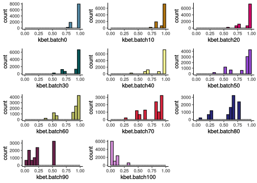
pcr

graph_connectivity
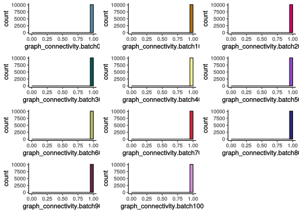
asw
sw
casw
Effects on score distribution - Range plots
How does the metric scores change across batches
cms.kmin80
## Picking joint bandwidth of 0.04cms.bmin80
## Picking joint bandwidth of 0.0212mm
## Picking joint bandwidth of 2.21
wisi
## Picking joint bandwidth of 0.0809isi
## Picking joint bandwidth of 0.0719entropy
## Picking joint bandwidth of 0.013## Warning: Removed 3 rows containing non-finite values (stat_density_ridges).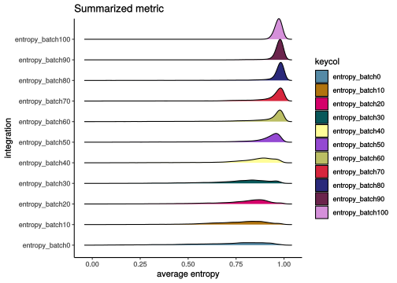
cms.batch
## Picking joint bandwidth of 0.0395lisi
## Picking joint bandwidth of 0.0939kbet
## Picking joint bandwidth of 0.0185## Warning: Removed 495 rows containing non-finite values (stat_density_ridges).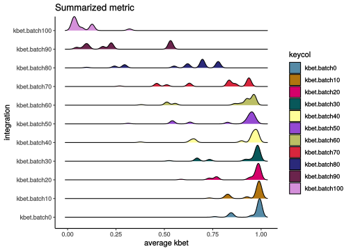
pcr
## Picking joint bandwidth of 0.000674graph_connectivity
## Picking joint bandwidth of 1.7e-05asw
## Picking joint bandwidth of 0.14sw
## Picking joint bandwidth of 0.00376casw
## Picking joint bandwidth of 0.00181Cellspecific score
How does the metric scores change across batches
cms_smooth.kmin80

cms.kmin80

cms_smooth.bmin80

cms.bmin80

mm

wisi

isi

entropy

cms_smooth

cms.batch

lisi

kbet

pcr

graph_connectivity

asw

sw

casw

Mean score trend
mean_score <- function(score){
score_all_b <- as_tibble(colData(sce)) %>% select(starts_with(score)) %>%
colMeans(na.rm = TRUE)
mean_tab <- data.frame(score = score_all_b,
"randomness" = seq.int(from = 0, to = 100, by = 10))
#get colour index
col_ind <- which(metrics_raw %in% score)
p <- ggplot(mean_tab, aes(x=randomness, y=score)) +
geom_point(size=4, color=cols[score]) +
geom_smooth(method = lm, se = FALSE, color = "black") +
labs(title=score, x="percent mixed label", y = paste0("average ", score)) +
scale_color_manual(values=cols) + theme_classic() + stat_cor(method = "pearson")
plot(p)
}
template_cor <- c(
"### {{nm}}\n",
"```{r cor{{nm}}, echo = FALSE}\n",
"mean_score('{{nm}}')\n",
"```\n",
"\n"
)
plots_cor <- lapply(metrics_raw,
function(nm) knitr::knit_expand(text = template_cor)
)cms.kmin80
## `geom_smooth()` using formula 'y ~ x'cms.bmin80
## `geom_smooth()` using formula 'y ~ x'mm
## `geom_smooth()` using formula 'y ~ x'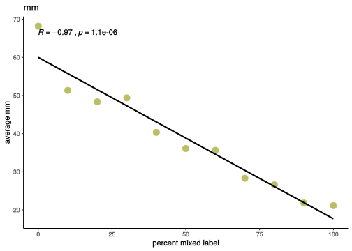
wisi
## `geom_smooth()` using formula 'y ~ x'isi
## `geom_smooth()` using formula 'y ~ x'entropy
## `geom_smooth()` using formula 'y ~ x'cms.batch
## `geom_smooth()` using formula 'y ~ x'lisi
## `geom_smooth()` using formula 'y ~ x'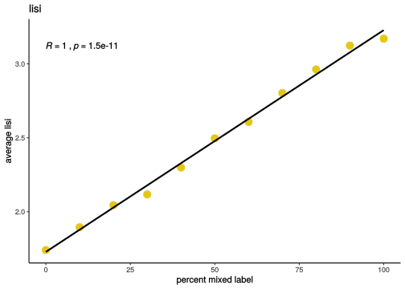
kbet
## `geom_smooth()` using formula 'y ~ x'pcr
## `geom_smooth()` using formula 'y ~ x'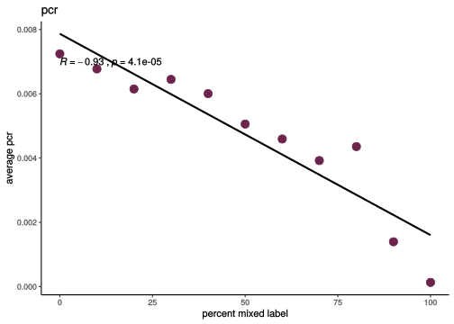
graph_connectivity
## `geom_smooth()` using formula 'y ~ x'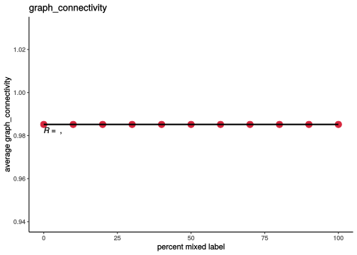
asw
## `geom_smooth()` using formula 'y ~ x'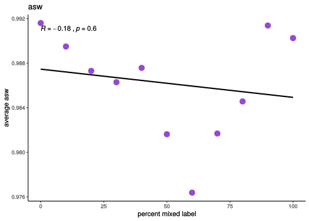
sw
## `geom_smooth()` using formula 'y ~ x'casw
## `geom_smooth()` using formula 'y ~ x'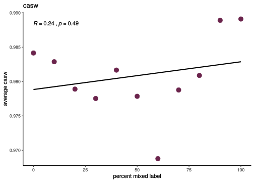
Summary/Comparison
#correlation coeff
scaling_sum <- lapply(metrics_raw, function(score){
score_all_b <- as_tibble(colData(sce)) %>% select(starts_with(score)) %>%
colMeans(na.rm = TRUE)
mean_tab <- data.frame(score = score_all_b,
"randomness" = seq.int(from = 0, to = 100, by = 10))
r <- cor(mean_tab$score, mean_tab$randomness, method = "spearman")
}) %>% set_names(metrics_raw) %>% bind_cols() %>% t() %>%
set_colnames("R") %>% as_tibble(.) %>% mutate("metric" = metrics_raw)
#"effect size"
effect_sum <- lapply(metrics_raw, function(score){
score_all_b <- as_tibble(colData(sce)) %>% select(starts_with(score)) %>%
colMeans(na.rm = TRUE)
effect_tab <- data.frame(score = score_all_b,
"percent_score" = score_all_b/score_all_b[11])
effect_tab_sum <- data.frame("min" = ifelse(score_all_b[1] < score_all_b[11],
effect_tab[1, "percent_score"],
1/score_all_b[1]),
"range" = effect_tab[11,"score"] - effect_tab[1,"score"])
}) %>% set_names(metrics_raw) %>% bind_rows()
scaling_sum <- cbind(scaling_sum, effect_sum)Combined results
#scale means
mean_res <- lapply(metrics_raw, function(score){
score_all_b <- as_tibble(colData(sce)) %>% select(starts_with(score)) %>%
colMeans(na.rm = TRUE)
}) %>% set_names(metrics_raw) %>% bind_cols() %>%
mutate(randomness = seq.int(from = 0, to = 100, by = 10))
#correlation
cor_metrics <- cor(mean_res, method = "spearman")
dir_ind <- which(!colnames(mean_res) %in% c("randomness", "mm", "kbet", "pcr"))
mean_res[, dir_ind] <- mean_res[, dir_ind] * -1
scale_res <- mean_res %>% select(-randomness) %>% scale() %>% as.data.frame()
scale_res$randomness <- mean_res$randomness
mean_long <- scale_res %>% pivot_longer(-randomness, names_to = "metric",
values_to = "scaled_result")
mean_long$metric <- factor(mean_long$metric,levels = metric_order)
ggplot(mean_long, aes(x = randomness, y = scaled_result)) +
geom_line(aes(color = metric)) +
geom_point(aes(color = metric)) +
theme_bw() +
scale_color_manual(values = cols[levels(as.factor(mean_long$metric))]) 
Separated plots
scale_long <- scale_res %>% pivot_longer(-randomness, names_to = "metric",
values_to = "scaled_score")
scale_long$metric <- factor(scale_long$metric,levels = metric_order)
scale_long <- scale_long %>% mutate(metric2 = metric)
cols_rep <- rep(cols[levels(as.factor(scale_long$metric))], each = nrow(mean_res))
p <- ggplot(scale_long, aes(x = randomness, y = scaled_score)) +
geom_line(data=scale_long %>% dplyr::select(-metric), aes(group=metric2),
color="grey", size=0.5, alpha=0.5) +
geom_line( aes(color=metric), color=cols_rep, size=1.2 ) +
scale_color_viridis(discrete = TRUE) +
theme_ipsum() +
theme(
legend.position="none",
plot.title = element_text(size=14),
panel.grid.minor = element_blank()
) +
ggtitle("Gradual increased randomness - starting with a strong batch effect") +
facet_wrap(~metric)
p
Correlation of metrices
corrplot(cor_metrics,
type="upper",
order="original",
hclust.method = "complete",
col=brewer.pal(n=8, name="PuOr"),
addgrid.col = NA,
addCoef.col = "black",
diag = FALSE)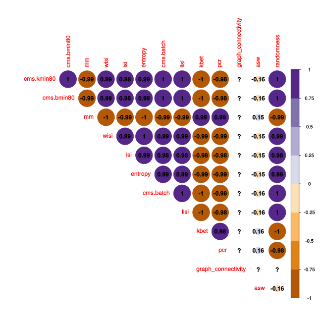
#save correlation
saveRDS(cor_metrics, out_path_cor)sessionInfo()## R version 3.6.1 (2019-07-05)
## Platform: x86_64-pc-linux-gnu (64-bit)
## Running under: Ubuntu 16.04.6 LTS
##
## Matrix products: default
## BLAS: /home/aluetg/R/lib/R/lib/libRblas.so
## LAPACK: /home/aluetg/R/lib/R/lib/libRlapack.so
##
## locale:
## [1] LC_CTYPE=en_US.UTF-8 LC_NUMERIC=C
## [3] LC_TIME=en_US.UTF-8 LC_COLLATE=en_US.UTF-8
## [5] LC_MONETARY=en_US.UTF-8 LC_MESSAGES=en_US.UTF-8
## [7] LC_PAPER=en_US.UTF-8 LC_NAME=C
## [9] LC_ADDRESS=C LC_TELEPHONE=C
## [11] LC_MEASUREMENT=en_US.UTF-8 LC_IDENTIFICATION=C
##
## attached base packages:
## [1] parallel stats4 stats graphics grDevices datasets utils
## [8] methods base
##
## other attached packages:
## [1] RColorBrewer_1.1-2 corrplot_0.84
## [3] scales_1.1.0 viridis_0.5.1
## [5] viridisLite_0.3.0 hrbrthemes_0.8.0
## [7] ggpubr_0.2.5 magrittr_1.5
## [9] jcolors_0.0.4 cowplot_1.0.0
## [11] scran_1.14.6 gridExtra_2.3
## [13] dplyr_0.8.5 tidyr_1.0.2
## [15] purrr_0.3.3 CellMixS_1.3.4
## [17] kSamples_1.2-9 SuppDists_1.1-9.5
## [19] scater_1.14.6 ggplot2_3.3.0
## [21] SingleCellExperiment_1.8.0 SummarizedExperiment_1.16.1
## [23] DelayedArray_0.12.2 BiocParallel_1.20.1
## [25] matrixStats_0.55.0 Biobase_2.46.0
## [27] GenomicRanges_1.38.0 GenomeInfoDb_1.22.0
## [29] IRanges_2.20.2 S4Vectors_0.24.3
## [31] BiocGenerics_0.32.0
##
## loaded via a namespace (and not attached):
## [1] nlme_3.1-145 bitops_1.0-6 tools_3.6.1
## [4] R6_2.4.1 irlba_2.3.3 vipor_0.4.5
## [7] mgcv_1.8-31 colorspace_1.4-1 withr_2.1.2
## [10] listarrays_0.3.1 tidyselect_1.0.0 compiler_3.6.1
## [13] extrafontdb_1.0 BiocNeighbors_1.4.2 labeling_0.3
## [16] ggridges_0.5.2 systemfonts_0.2.2 stringr_1.4.0
## [19] digest_0.6.25 rmarkdown_2.1 XVector_0.26.0
## [22] pkgconfig_2.0.3 htmltools_0.4.0 extrafont_0.17
## [25] limma_3.42.2 rlang_0.4.5 DelayedMatrixStats_1.8.0
## [28] farver_2.0.3 RCurl_1.98-1.1 BiocSingular_1.2.2
## [31] GenomeInfoDbData_1.2.2 Matrix_1.2-18 Rcpp_1.0.3
## [34] ggbeeswarm_0.6.0 munsell_0.5.0 gdtools_0.2.2
## [37] lifecycle_0.2.0 stringi_1.4.6 yaml_2.2.1
## [40] edgeR_3.28.1 zlibbioc_1.32.0 plyr_1.8.6
## [43] grid_3.6.1 dqrng_0.2.1 crayon_1.3.4
## [46] lattice_0.20-40 splines_3.6.1 locfit_1.5-9.1
## [49] knitr_1.28 pillar_1.4.3 igraph_1.2.4.2
## [52] ggsignif_0.6.0 glue_1.3.1 evaluate_0.14
## [55] renv_0.9.3-44 vctrs_0.2.3 Rttf2pt1_1.3.8
## [58] gtable_0.3.0 assertthat_0.2.1 xfun_0.12
## [61] rsvd_1.0.3 tibble_2.1.3 beeswarm_0.2.3
## [64] statmod_1.4.34 ellipsis_0.3.0